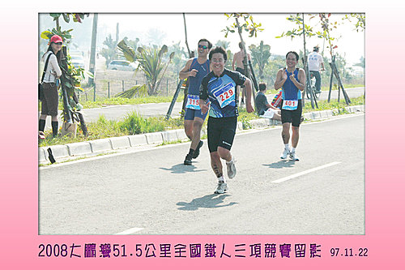

「東港大鵬灣全國鐵人三項競賽」於民國97年11月22日上午登場，競賽地點從大鵬灣國家風景區管理處瀉湖第一號碼頭開始，此次鐵人三項競賽之特色在於自由車及路跑地點為國道，而為全國首創，吸引了國內外眾多優秀選手參加，選手必須通過海上長泳、自由車競速、以及長程路跑，共計51.5公里距離，才算完成競賽。
到達大鵬灣國家風景區管理處瀉湖第一號碼頭，整裝完成準備出發。
海上長泳前留影。
小獅與小簡以大家望塵莫及的速度，拔得頭籌。
小揚經過意志力的考驗繼小獅與小簡之後，奮力完成競賽。
完成賽程的滋味是甜美的。

阿信從一路落後，而在路跑項目，展現堅強意力，一路超越到終點。
小泓雖然超過大會規定的時間抵達終點，但終究還是撐完51.5公里距離。
辛苦完賽，當然要照個相留念。
結束賽事，準備回家囉。
康樂股長 於 2008-12-26 08:51:35 回應
世界沒有極限，只有劃地自限。 敬賀河東獅2位新鐵人阿信及小泓， 挑戰大鵬灣鐵人三項圓滿成功。 小獅